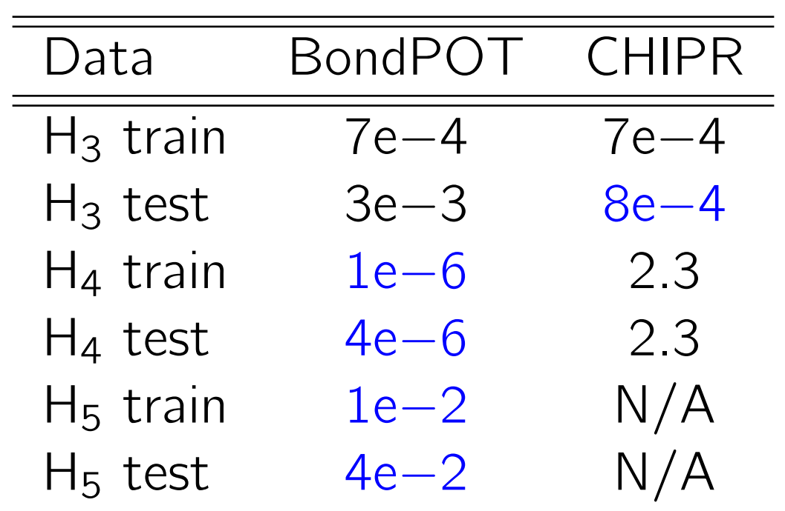

Machine learning for
chemical data
Faculty of Mathematics, University of Vienna, Vienna, Austria
Sections
- Preliminary: general processes
- Pair potential energy surface
- Global potential energy surface for small molecules
- Robust Shepard model for interpolation
- Learning equilibrium geometries by minimal supervision
Preliminary
- One-line-summary
- Motivation
- Process flow
- Molecular data
- Feature extraction
- Fitting: modelling and optimization
- Evaluation
Single-line-summary

Motivation
Adapted from Lilienfeld (2018).
Process flow

Data
Molecular data:
-
Atomic coordinates $\textcolor{blue} X \in \mathbb{R}^{n_\text{atom} \times 3}$
(units: 1 Angstrom = 1.89 Bohr) - List of atoms' type, e.g., $[\text{C, H, O, O, ...}]$
-
Target property (in this case, energy) $\textcolor{green}E \in \mathbb{R}$
(units: 1 Hartree = 27.2 eV = 627.5 kcal/mol)
Additional data:
- Nuclear charge $Z_i \in \mathbb{Z}^+$ of atom $i$
- Connection information in SMILES string format

Feature extraction
- Graph features: dressed atom, dressed bond, dressed angle, ...
- $n$-body features: distance, angular, dihedral, ...
- Feature selection: principal component analysis (PCA)
- Main properties: invariant to translation, rotation and permutation (of atoms with same type)
- Typically encoded in a matrix $\textcolor{blue} F^m \in \mathbb{R}^{n^m_\text{atom} \times n_\text{feature}}$ or a vector $\textcolor{blue} f_{m:} \in \mathbb{R}^{n_\text{feature}}$ for molecule $m$
Fitting
Model
-
General form: $\textcolor{green} E_m \approx V(\textcolor{blue} x_m, \textcolor{red} \theta)$
for molecule $m$. -
Linear system: $\textcolor{blue} A \textcolor{red} \theta = \textcolor{green} E$,
where $ \textcolor{blue} A \in \mathbb{R}^{n_\text{data} \times n_\text{feature}}$ -
Kernel function: $\textcolor{blue} K_{ij} = k( \textcolor{blue} x_i, \textcolor{blue} x_j)$,
$k: \textcolor{blue}{\mathcal{X}} \times \textcolor{blue}{\mathcal{X}} \mapsto \mathbb{R}$ -
Neural networks: $z_i = \sigma_i(\textcolor{red} W_iz_{i-1} + \textcolor{red} b_i)$,
for $i=1,2,..n_\text{layer}; $ where $\textcolor{red} W_l$ and $\textcolor{red} b_l$ are weight matrix and bias vector of $l$th layer respectively, $\sigma_l$ is elementwise non-linear activation function, and $ \textcolor{blue}{z_0} \in \textcolor{blue}{\mathcal{X}}$
Optimization
- General problem: $\min_{\rtheta} c(V, \textcolor{blue}{\mathcal{X}}, \rtheta, \textcolor{green}E)$
-
Least squares objective function:
$\min_{\rtheta} \sum_{m \in M_\text{train}} \Big(V(\textcolor{blue}{x}_m, \rtheta) - \gE_m\Big)^2$ -
Solvers for linear systems:
Gaussian elimination, CGLS - Solvers for nonlinear systems: LM, BFGS, SGD
Evaluation
- Evaluation of test data (out of sample data).
- MAE: $\frac{1}{|M_\text{test}|}\sum_{m \in M_\text{test}}|V(\textcolor{blue}{x}_m, \rtheta) - \gE|$
- RMSE: $\sqrt{\frac{1}{|M_\text{test}|} \sum_{m \in M_\text{test}} \Big(V(\textcolor{blue}{x}_m, \rtheta) - \gE_m\Big)^2}$
- K-fold cross validation
- Automatic evaluation by Hyperparameter tuning
Pair potential energy surface
- Pair potential basics
- Demo example: Lennard-Jones potential
- Ansatz for benchmark
- Benchmark results
Lennard-Jones potential
Basic examples
 $\cblue{r}_{ij} = \|\cblue x_i - \cblue x_j\|_2 $
$\cblue{r}_{ij} = \|\cblue x_i - \cblue x_j\|_2 $
\[
V(\rtheta, \textcolor{blue} r) = \frac{{\rtheta}_1}{\textcolor{blue} r^{12}} - \frac{{\rtheta}_2}{\textcolor{blue} r^{6}}
\]
\[
V(\rtheta, \textcolor{blue} r) = \frac{{\rtheta}_0 + {\rtheta}_1\textcolor{blue} r + .. + {\rtheta}_n\textcolor{blue} r^n}{{\rtheta}_0 + {\rtheta}_1\textcolor{blue} r + .. + {\rtheta}_{n+6}\textcolor{blue} r^{n+6}}
\]
- Repulsive term $\approx {\color{blue}\mathcal{O}(r^{-12})}$ (LJ), or ${\color{blue}\mathcal{O}(r^{-1})}$ (Quantum theory).
- Attractive term $\approx {\color{blue}\mathcal{O}(r^{-6})}$ (Van der Waals & Quantum theory).
Demo: Lennard-Jones potential
\[
V_\text{LJ}(\textcolor{red} \epsilon, \textcolor{red}{\sigma}) = 4 \textcolor{red}\epsilon \Big[\Big(\frac{\textcolor{red} \sigma}{\textcolor{blue} r}\Big)^{12} - \Big(\frac{\textcolor{red} \sigma}{\textcolor{blue} r}\Big)^6\Big]
\]
Ansatz for benchmark
RATPOT1
\[ \begin{align*} \cgreen V &= \cred{c}_0 + P/S, \\ P &= \cblue{Z_iZ_j}\left(\frac{1}{\cblue{r}}+ \cred{c}_1 \cblue{r}\right)+\cred{c}_2+\cred{c}_3 \cblue{r}^2+ ...+\cred{c}_{2m-1}\cblue{r}^{2m-2}, \\ Q &= 1+(\cred{c}_{2m}+\cred{c}_{2m+1} \cblue{r} +...+\cred{c}_{3m} \cblue{r}^m)\cblue{r}, \\ S &= 1+\cred{c}_1 (\cblue{r} Q)^2. \end{align*} \]RATPOT2
\[ \begin{align*} \cgreen V &= \cred{c}_0+P/Q, \\ P &= \cred{c}_1\prod_{i=1}^m ((\cblue{r}-\cred{a}_i)^2+\cred{b}_i \cblue{r}), \\ Q &= \cblue{r}(\cblue{r}+\cred{d}_1)\prod_{i=2}^{m+3}((\cblue{r}-\cred{c}_i)^2+\cred{d}_i \cblue{r}). \end{align*} \]CHIPR
\[ \begin{align*} \cgreen{V} &= \frac{\cblue{Z_iZ_j}}{\cblue{r}^{\cred{\omega}}}\sum_{k=1}^M \cred{C}_ky_k, \\ y_k &= \sum_{p=1}^m \cred{c}_{p}\text{ sech}^{\cred{\eta}_{p}}(\cred{\gamma}_{p}(\left[\cblue{r} - \cred{\zeta\beta}^{p-1}\right])). \end{align*} \]Pair potential benchmark

Bonding potential energy surface
- Primitive features
- Advanced features
- Bonding potential model
- Useful tool: automatic differentiation
- Benchmark results
Primitive features
Bonding functions:
\[ t := t(\cblue r) = \left(\frac{\cblue r^2 - {\color{red}\underline{r}}^2}{{\color{red}\overline{r}}^2 - \cblue r^2}\right)^{\cred{e}}, \] \[ s := s(\cblue r) = \begin{cases} 1 & \cblue r < {\color{red}\underline{r}} \\ \frac{t_0}{t + t_0} & {\color{red}\underline{r}} \leq \cblue r \leq {\color{red}\overline{r}}, \\ 0 & {\color{red}\overline{r}} < \cblue r \end{cases} \] \[ p_1(s) := s, ~ p_{\color{red}d}(s):= s(1-s)T_{{\color{red}d}-2}(1-2s) \text{ for } {\color{red}d} > 1, \] \[ {\color{blue}b}_{ij{\color{red}d}} := p_{\color{red}d}(s)\text{ for }{\color{red}d}=1,2,... \]Bump functions:
- $\rho := \cblue r/{\color{red}\hat r_{ij}}, ~ q := \frac{\color{red}{N}}{1+\rho} \in (0, N]$
- $h_k := h_k(q) = [1 - (q - k)^2]^3_+$
- $w := w(q) = \sum_k h_k$
Primitive features := (bumps, wavelets):
\[ {\color{blue}z}_{ij} := (h_k/w, (q-k)h_k/w). \]Advanced features
For atom $i$:
Reference pair potential:
\[ {\color{blue}U}[i] := \sum_{j \neq i}V_{ij}. \]Choices of pair potentials:
- Nonlinear pair-pot (cheap, least accurate): \[ V_{ij} := V(\cblue r) = \begin{cases} \infty & \text{ if } \cblue r \leq {\color{red}r_h} \\ -{\color{red}C}({\color{red}r_C}^2 - \cblue r^2)^{\color{red}g}\frac{\cblue r^2 - {\color{red}r_0}^2}{\cblue r^2 - {\color{red}r_h}^2} & \text{ if } {\color{red}r_h} < \cblue r \leq {\color{red}r_C} \\ 0 & \text{ else} \end{cases} \]
- RATPOT$_{1,2,..}$ (most expensive, most accurate)
- Bump functions (middle ground)
Coordination vectors:
\[ {\color{blue}Y}_{\color{red}d}[i] := \sum_{j\neq i}{\color{blue}b}_{ij{\color{red}d}}, \]- $\cblue Y_1[i]$ is approximately proportional to coordination number of atom $i$.
- For $\cred d>1$, $\cblue Y_{\cred d}[i]$ measures the partial bonding.
Gram matrices:
\[ {\color{blue}G}[i]_{{\color{red}d}_1{\color{red}d}_2} := r_{{\color{red}d}_1}[i] \cdot r_{{\color{red}d}_2}[i], \] where \[ r_{\color{red}d}[i] := \sum_{j \neq i} {\color{blue}b}_{ij{\color{red}d}}(\cblue x_j - \cblue x_i) \in \mathbb{R}^3. \] The Gram matrices contain implicit information of bond angles and torsion angles.Bonding potential model
- Basis functions: \[ {\color{blue}\Phi := (U, Y_1, UY_1, Y_1^2,Y_2,G_{11},...,Y_1^5,...,G_{23})}. \]
- Atom $i$ energy contribution: \[ \epsilon[i] = A[i] - \sqrt{B[i] + C[i]}, \] where $A$ is of the form \[ A[i] = \frac{\sum\limits_k {\color{red}\theta}_k {\color{blue}\Phi}_k[i]}{1 + \left(\sum\limits_k {\color{red}\theta'}_k {\color{blue}\Phi}_k[i] \right)^2}, \] and $B,C$ are of the form \[ T[i] = \frac{\left(\sum\limits_k {\color{red}\theta}_k {\color{blue}\Phi}_k[i]\right)^2}{1 + \left(\sum\limits_k {\color{red}\theta'}_k {\color{blue}\Phi}_k[i] \right)^2}. \] Potential energy at a given conformation: \[ \cgreen V = \sum_i \epsilon[i]. \]
Automatic differentiation!
- Three well known classes of differentiation: symbolic differentiation, finite difference, automatic differentiation
-
Finite difference:
- (+) Generic, easiest to implement
- (-) Inaccurate (approximate), slow, commits cardinal sins of numerical computation: “thou shalt not add small numbers to big numbers”, and “thou shalt not subtract numbers which are approximately equal”.
-
Symbolic differentiation:
- (+) Accurate (exact)
- (-) Not generic, cumbersome to implement (expression complexity grows rapidly by addition of new variables).
-
Automatic differentiation (AD): computes the derivative of a function by "reading" the function's algorithm.
Modes: forward AD, reverse AD.
- (+) Accurate (exact), fast, generic.
- (-) ?
- Function: $f(x) = \cblue{(x_1 + x_2)(x_1 + 1)}, ~~ f([\cblue{2,1}]) = 9$
-
Gradient: $g(x) := \Big[\cgreen{\frac{\partial f}{\partial x_1}, \frac{\partial f}{\partial x_2}}\Big]^T $
$= [2x_1 + x_2 + 1, ~ x_1 + 1]^T, ~~ g([2,1]) = [\cgreen{6, 3}]^T.$ - Forward sweep: \[ \begin{split} \cred{v_1} &:= x_1 + x_2 = 3, \\ \cred{v_2} &:= x_1 + 1 = 3, \\ \cred{v_3} &:= \cred{v_1v_2} = 9, \\ f &:= \cred{v_3} = 9. \end{split} \]
- Backward sweep: \[ \begin{split} \frac{\partial f}{\partial x_1} &= \frac{\partial f}{\partial v_3} \frac{\partial v_3}{\partial v_1} \frac{\partial v_1}{\partial x_1} + \frac{\partial f}{\partial v_3} \frac{\partial v_3}{\partial v_2} \frac{\partial v_2}{\partial x_1}, \\ \cgreen{\frac{\partial f}{\partial x_1}} &= 1 \cdot \cred{v_2} \cdot x_2 + 1 \cdot \cred{v_1} \cdot 1 = \cgreen 6. \end{split} \] \[ \begin{split} \frac{\partial f}{\partial x_2} &= \frac{\partial f}{\partial v_3} \frac{\partial v_3}{\partial v_1} \frac{\partial v_1}{\partial x_2},\\ \cgreen{\frac{\partial f}{\partial x_2}} &= 1 \cdot \cred{v_2} \cdot 1 = \cgreen 3. \end{split} \]
Global potential benchmark
Current best obtained RMSE (in Hartree)

BondPOT optimization timing:
- Finite differences: 523.82s
- Reverse AD: 129.02s
- Uses least squares objective function
- Uses Levenberg–Marquardt algorithm from LsqFit.jl
- Uses multistart for the optimization routine
- Data split train:test = 80% : 20%
- Benchmark against CHIPR
Robust Shepard model for interpolation (ROSEMI)
- Model definition
- Solving the model
- Benchmark results
Model definition
Improvement of the Shepard model (D. Shepard (1968), R. Franke (1982)),
Robust Shepard model for interpolation (ROSEMI): \[ V_K(\cblue{w}):=R_K(\cblue{w})/S_K(\cblue{w}) ~~~ \text{ for } \cblue{w} \in \mathbb{R}^m \setminus \{\cblue{w}_k\mid k\in K \}, \] where
Extending $V_K$: \[ V_K(\cblue w):= \begin{cases} V_k(\cblue w_k) & \text{if } \cblue w=\cblue w_k \text{ with } k\in K, \\ R_K(\cblue w)/S_K(\cblue w) & \text{otherwise}. \end{cases} \]
Robust Shepard model for interpolation (ROSEMI): \[ V_K(\cblue{w}):=R_K(\cblue{w})/S_K(\cblue{w}) ~~~ \text{ for } \cblue{w} \in \mathbb{R}^m \setminus \{\cblue{w}_k\mid k\in K \}, \] where
- $R_K(\cblue{w}) :=\sum_{k\in K} \frac{V_k(\cblue{w})}{D_k(\cblue{w})}$
- $S_K(\cblue{w}):=\sum_{k\in K} \frac{1}{D_k(\cblue{w})}$
- $D_k(\cblue{w}) = \|\cblue{w}-\cblue{w}_k\|_2^2$
Extending $V_K$: \[ V_K(\cblue w):= \begin{cases} V_k(\cblue w_k) & \text{if } \cblue w=\cblue w_k \text{ with } k\in K, \\ R_K(\cblue w)/S_K(\cblue w) & \text{otherwise}. \end{cases} \]
Math Formulas
Here is an example of a formula:
\[ E = mc^2 \]
Another one:
\[ \int_0^\infty e^{-x^2} dx = \frac{\sqrt{\pi}}{2} \]
Plot